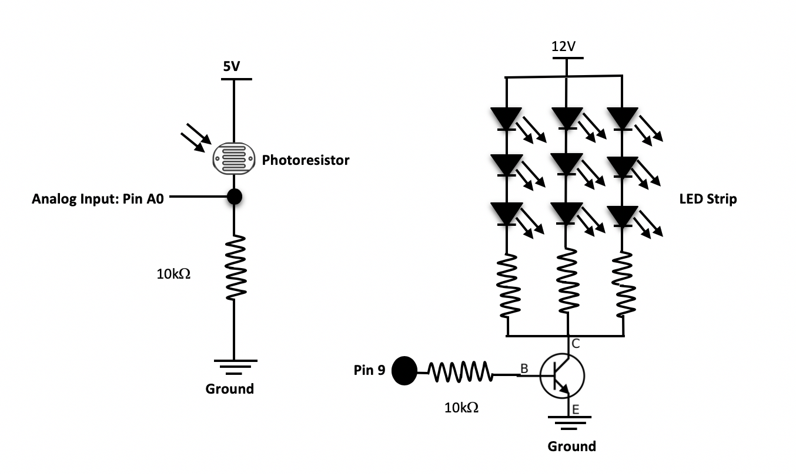
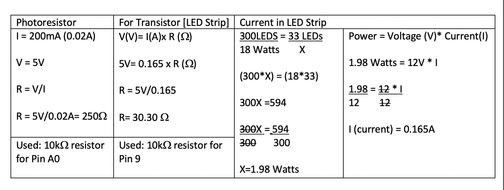
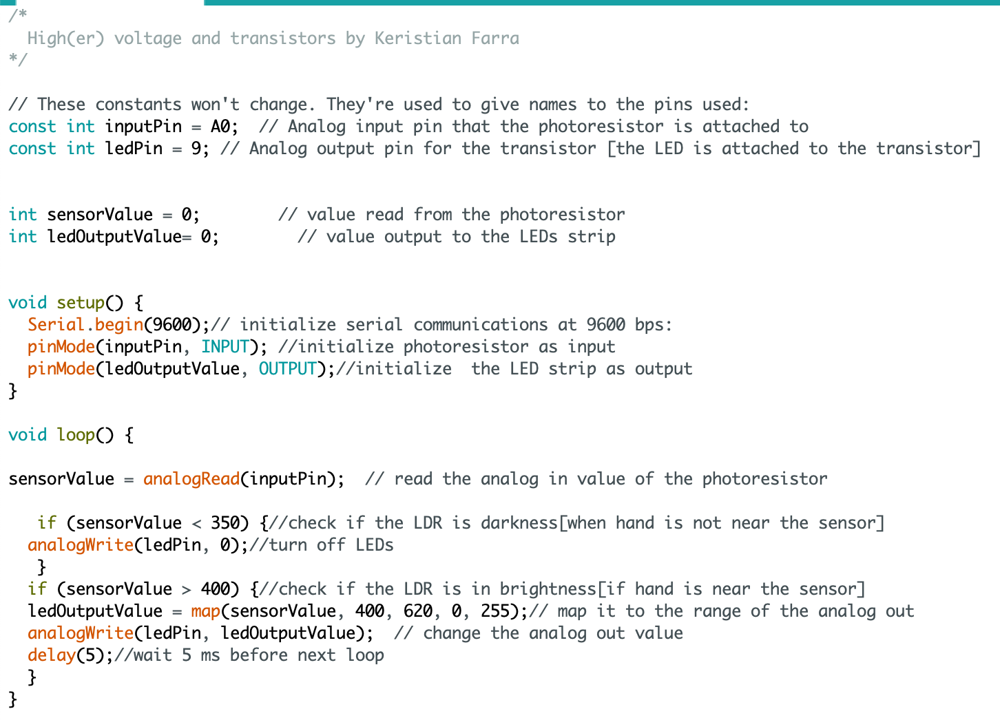

Assignment 4 : High(er) voltage and transistors!
Task
Create a schematic, circuit, and code that uses a transistor to control load power separate from logic power. Use analogWrite(), a high-load output device, and an input sensor.
Demo

Circuit


- The photoresistor connected to analog input [Pin A0].
- Used the breadboard put all the pieces together [wires, resistors,transistor..]
- Utilized the Arduino board for A0 Pin, Pin 9, Ground, & 5V.
- Used one alligator clip to connect the negative side of the LEDs strip with the transistor which is connected to Pin 9.
- Used another alligator clip to connect the positive side of the LEDs strip with positive side of the 5.5mm barrel Jack to screw terminal converter[power-12v].
- Connected the negative side of the 5.5mm barrel Jack to screw terminal converter[power-12v] to the ground on the breadboard and connected the ground on the Arduino with the ground on the breadboard with wire.
- Used 33 LEDs from the 300 LED strip
- Used a transistor
- Used a Photoresistor
- Two 10k ohm resistors, one for transistor (for the LED strip) and one for the photoresistor.
Schematic
Above is the schematic for this circuit. It shows how each part is connected.
Here is the calculations for the LED strip, the LDR and the current in the lED.The min. resistor value for LDR is 25 ohms. However, even with the LDR big amount of 5V would flow into the ground so I added a fixed 10k ohms resistor to further reduce the flow[avoid the risk of equipment damage]. I also used 10k ohms for the transistor to limit the amount of current flow. My circuit with 0.165A current is safe because the transistor can support upto 0.6A of current.
Code
Aboce is the code I wrote for the High(er) voltage and transistors.
What It Does: Reads an analog input pin, maps the result to a range from 0 to 255 and uses the result to set the pulse width modulation (PWM) of an output pin.
I chose sensor value range 400-620 for the green because when I checked the Serial Moniter the value gets bigger as my finger moves aways from the sensor/LDR. Therefore, when the sensor value is higher than 400, it will turns off the LED
On the other hand, I choose values lesss than 350 for the sensor value because numbers were getting smaller as I get closer to the sensor.Therefore, when the sensor value is lower than 350, the LED will turn on.
Read the comments on the code to understand how it works.